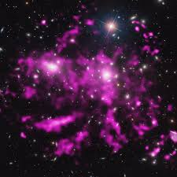

¿Qué son?
Los que somos aficionados a la astronomía...
alguna vez en nuestras vidas nos hemos preguntado...
¿Qué es un cometa?


Un cometa es un pequeño cuerpo helado del Sistema Solar que se calienta y comienza a liberar gases cuando
pasa cerca del Sol, un proceso llamado desgasificación. Esto produce una atmósfera o coma extendida, libre
gravitacionalmente, que rodea el núcleo y, a veces, una cola de gas y polvo que sale del coma.